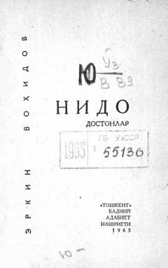

NUrush va xotira mavzusiga bag'ishlangan ta'sirchan doston.
Erkin Vohidovning ushbu mashhur dostonida ota va farzand muloqoti, urush fojiasi va kelajakka bo'lgan insoniy umidlar tarannum etilgan. Asar o'zining samimiy va ta'sirchan ohangi bilan o'quvchi qalbidan chuqur joy olgan o'zbek she'riyatining mumtoz namunalaridan biridir.